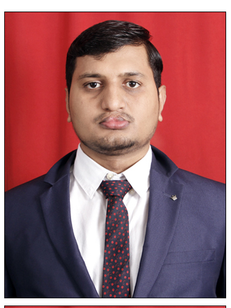

01 — LEADERSHIP
Technical project management
Project planning, estimation, scope control, risk and dependency management, stakeholder communication, and release coordination.
Hi, I’m Dinesh. I bring technical depth and a people-first approach to building WordPress products and delivering better WooCommerce experiences.

01 / ABOUT ME
I work at the intersection of engineering, product thinking, and project delivery — helping teams turn complex requirements into maintainable software.
Over 10+ years, I’ve built and delivered WordPress and WooCommerce solutions ranging from custom plugins and multi-vendor marketplaces to payment gateways, shipping integrations, subscriptions, and licensing systems.
Most recently, I worked as a Technical Project Manager at Webkul Software, leading engineering and QA teams, coordinating stakeholders, and guiding projects from discovery through release.
Clear requirements, sensible architecture, and delivery plans teams can execute.
Maintainability, security, performance, and compatibility are part of the design.
Unblock engineers, align stakeholders, and create a shared definition of done.
02 / EXPERTISE
01 — LEADERSHIP
Project planning, estimation, scope control, risk and dependency management, stakeholder communication, and release coordination.
02 — ENGINEERING
Custom plugin development, extensible architecture, WooCommerce workflows, multisite setups, REST APIs, and platform integrations.
03 — RELIABILITY
Query and cache optimization, background processing, debugging, deployment workflows, and Docker-based demo environments.
04 — MODERN WORKFLOWS
Community contributions, code quality practices, developer tooling, and responsible use of AI-assisted engineering workflows.
TECH STACK
03 / SELECTED WORK
A focused tool for store owners to manage cost-of-goods data more efficiently. Ongoing product work emphasizes performance, reliability, and safe bulk operations.
Led delivery across marketplace capabilities including vendor workflows, buyer–seller communication, group buying, and payment integrations.
Project experience spanning Adyen, Stripe, USPS, Shiprocket, Ezidebit, and other commerce integrations.
Contributing to the WordPress ecosystem through translation work, community participation, and work around WordPress.org Core and Meta projects.
Selected examples from a broader portfolio of commercial plugins and client projects. Some work was delivered as part of a team at previous employers.
04 / EXPERIENCE
Webkul Software Pvt. Ltd. · Noida
Led planning, technical coordination, and delivery for WordPress and WooCommerce products. Managed and mentored a 20+ member engineering and QA team and coordinated 10+ concurrent client and product projects.
Wisetr Pvt. Ltd. / XLPlugins · New Delhi
Developed and maintained WordPress and WooCommerce plugins, supported releases to WordPress.org, and worked on payment integrations and conversion-focused commerce extensions.
ClagTech Technology Pvt. Ltd. · Lucknow
Built and customized WordPress websites and PHP applications for a range of client requirements.
WebCom Designs Services Pvt. Ltd. · Lucknow
Developed and customized WordPress websites and created the BuddyPress Activity Filter plugin for the WordPress plugin repository.
CEDCOSS Technologies · Lucknow
Built foundational experience in PHP, WordPress, WooCommerce, plugin development, and theme customization.
05 / EDUCATION
U.P. Rajarshi Tandon Open University, Prayagraj
Shri Ramswaroop Memorial College of Engineering and Management, Lucknow · AKTU
University of Allahabad
06 / GET IN TOUCH
I’m interested in connecting with teams building thoughtful WordPress products, enterprise commerce solutions, and open-source software.